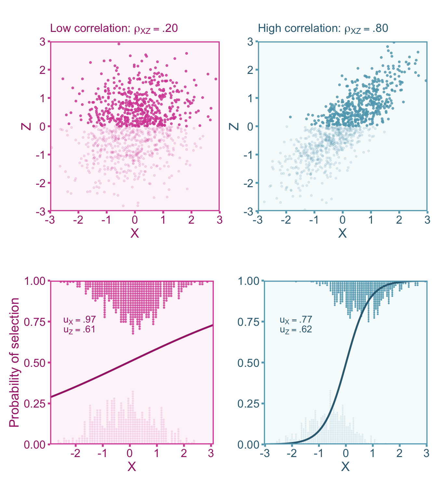
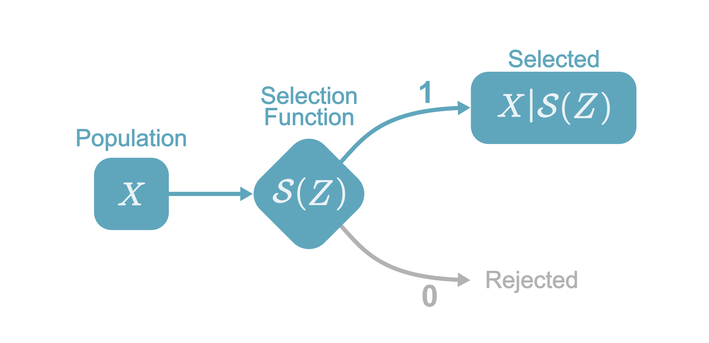
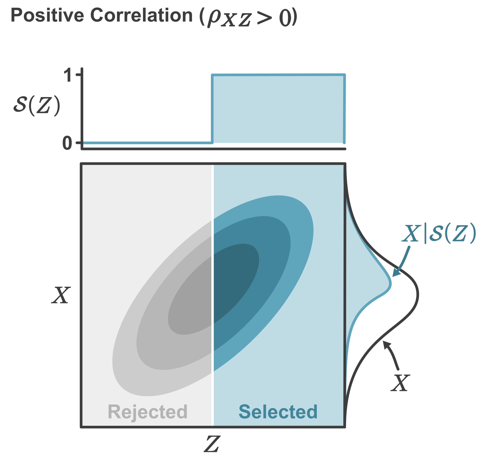
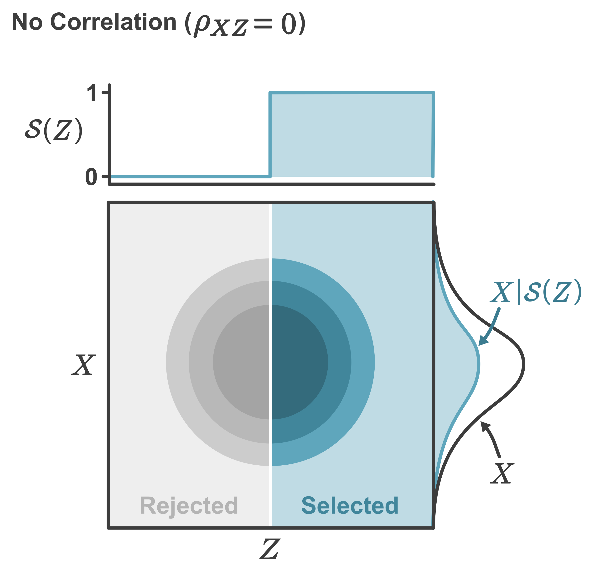
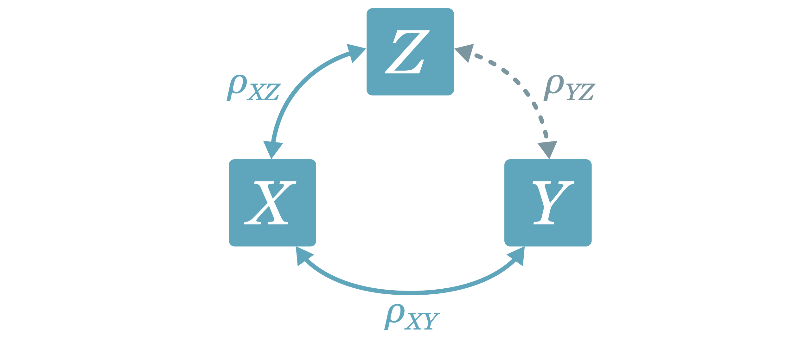
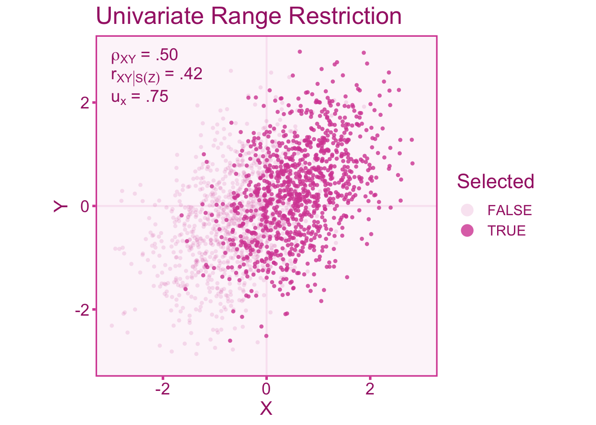
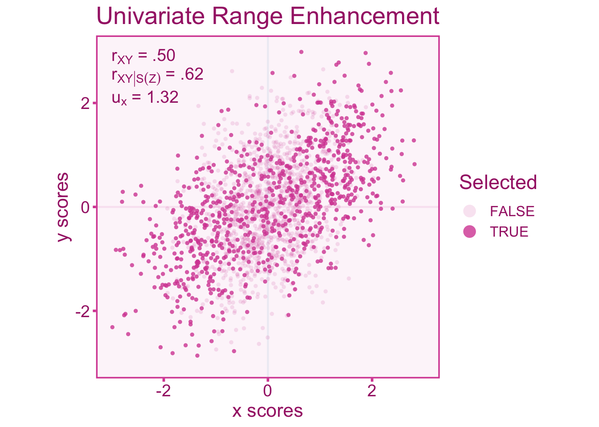
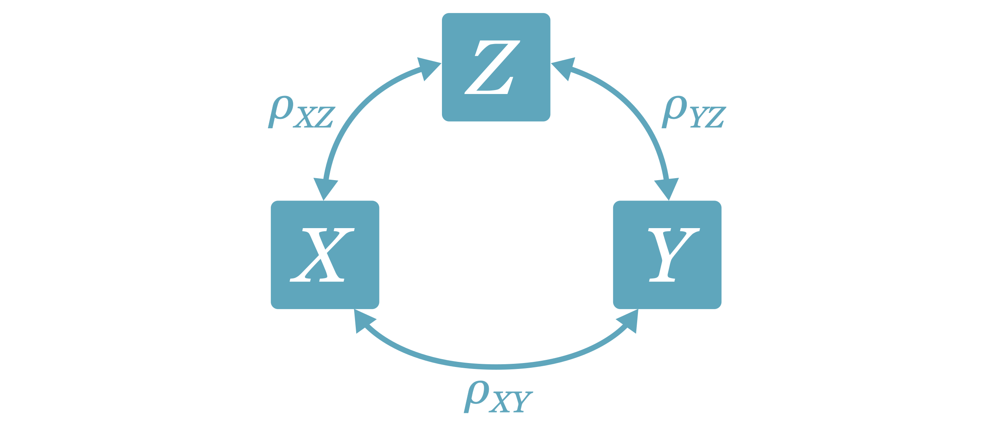
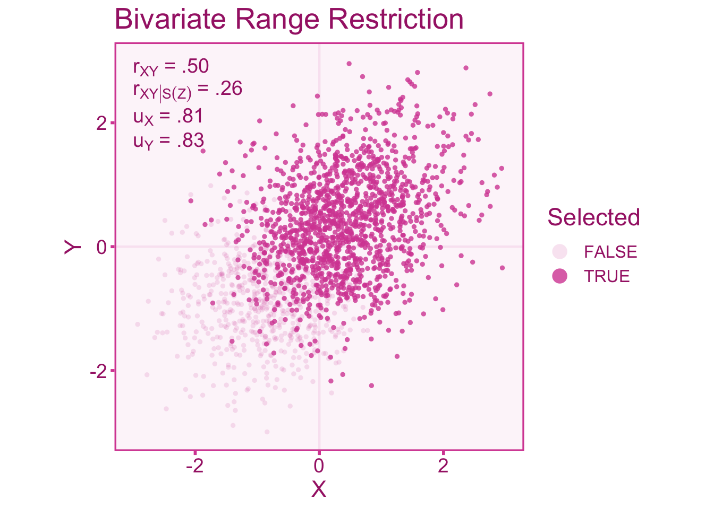
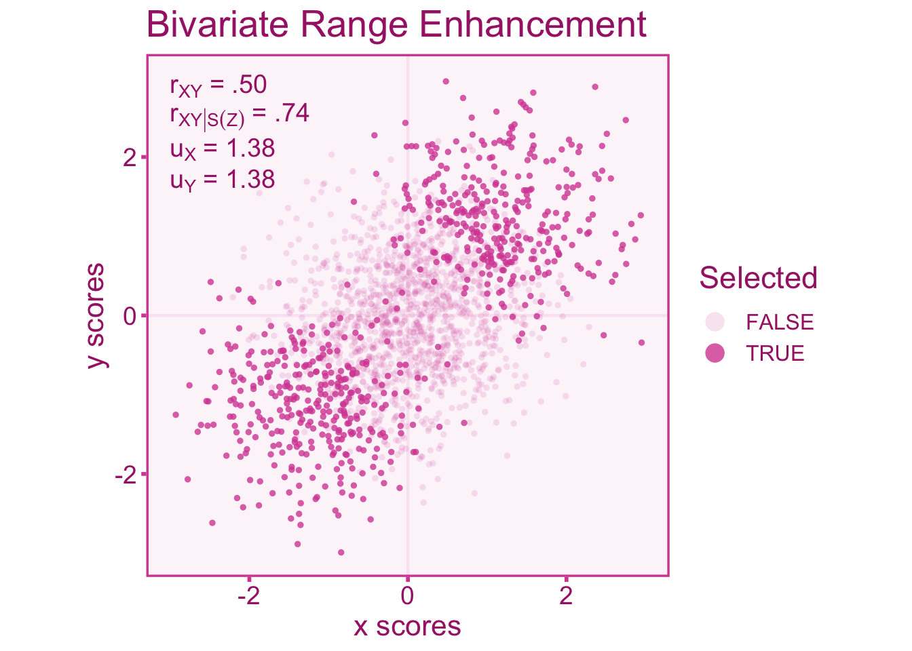

10 Indirect Selection
10.1 Introduction
Indirect selection occurs when the selection process is not directly on the variable of interest, but rather on another related variable. Similar to direct range restriction, this will cause restriction (or enhancement) in the variable of interest.
10.2 An Example of Indirect Range Restriction
Imagine a research team is conducting a study on academic motivation among college students using a survey that includes various questions related to academic engagement, goal orientation, and effort investment. The researchers administer the survey to a large sample of students across different universities. However, during the data cleaning process, the researchers identify a subset of respondents who exhibited signs of inattentiveness and carelessness in their responses. These signs include straight-lining questions (e.g., consistently selecting the same response option without reading the questions) or responding randomly without considering the content of the questions. Recognizing that inattentive or careless responding can distort the measurement of academic motivation, the researchers decide to exclude these individuals from the analysis. The rationale is to ensure that the data collected represents genuine responses and validly measures academic motivation. The unintended consequence of this decision is indirect range restriction. By removing inattentive and careless responders, who likely also have lower academic motivation and engagement, from the dataset, the observed range of academic motivation scores is reduced. The excluded individuals, who may have had lower academic motivation scores, are not accounted for in the analysis, resulting in an underestimation of the variability of academic motivation relative to the population.
10.3 Selection Functions
In the previous chapter we introduced the concept of a selection function for direct range restriction. Here we will expand on that section for the case of indirect range restriction, where we must introduce a new variable, \(Z\). Indirect selection by definition means that the variable of interest is not used in the selection process, rather, the selection directly on another variable such that, \(\mathcal{S}(Z)\) (Figure 10.1 illustrates the selection process).

However, selecting on \(Z\) may affect the distribution of \(X\) depending on the relationship between \(X\) and \(Z\). Particularly, if we assume normally distributed variables the correlation between \(X\) and \(Z\) can entirely describe the affect that \(\mathcal{S}(Z)\) has on the distribution of \(X\). If \(X\) and \(Z\) are independent (\(\rho_{XZ}=0\)), then selection on \(Z\) would not affect the distribution of \(X\) such that,
\[ f(X|\mathcal{S}(Z)) = f(X),\;\;\;\; \rho_{XZ}= 0 \]
For example, consider that we select individual’s in the top half of \(Z\) (i.e., above the mean, \(\mu_{Z}\)), such that our selection function can be defined as,
\[\mathcal{S}(Z) = \begin{cases}1 & \text{if }Z\geq\mu_{Z}\\ 0 & \text{if }Z<\mu_{Z} \end{cases}\] If the correlation, \(\rho_{XZ}\) is positive, then the distribution of \(X|\mathcal{S}(Z)\) (i.e., \(X\) given selection on \(Z\)) will have a higher mean and less variability (see Figure 10.1)

If there is no correlation between \(X\) and \(Z\), then the distribution of \(X|\mathcal{Z}\) would be left unchanged (see Figure 10.2).

10.4 Quantifying Selection-Induced Restriction/enhancement
The distribution of scores in the target population may exhibit a greater (or lesser) degree of variability compared to the sample that has been selected into the study. Therefore the standard deviation of scores in the target population (\(\sigma_{X}\)) may differ from the population under selection. (\(\sigma_{X|mathcal{S}(Z)}\)). To index the difference between the two standard deviations, we can calculate the \(u\)-ratio Wiernik and Dahlke (2020). The \(u\)-ratio is the ratio between the standard deviations of the population under selection and the target population such that (\(\upsilon\) denotes the population \(u\)-ratio),
\[ \upsilon_X = \frac{\sigma_{X|\mathcal{S}(Z)}}{\sigma_{X}} \]
The \(u\)-ratio in cases of range restriction will exist in the interval (0–1). Conversely, when the \(u\)-ratio is greater than 1 it is indicative of range enhancement. The target population standard deviation is often quite difficult to acquire since we do not usually have access to a random sample from that population. However, the target population standard deviation can be estimated from a reference sample that is representative of the target population. This often comes in the form of standardization samples or norm samples (obtained from test manuals) if the unrestricted group is the general population. For example, the distribution full-scale IQ scores derived from the Wechsler Adult Intelligence Test has a standard deviation of 15 in the US population (Wechsler 2008). We can use this estimate as the standard deviation for the unrestricted population. Lets say we select a sample from members of Harvard students, who tend to have higher IQs than the general population (this is due to the fact that selection criterion, such as GPA and SAT scores are positively correlated with IQ). If the standard deviation of IQ in Harvard students is 10, then the \(u\)-ratio would be,
\[ u_X = \frac{S_{X|\mathcal{S}(Z)}}{S_X} = \frac{10}{15}= .67 \]
However it is not always the case that an estimate of the unrestricted standard deviation is readily available. Therefore if the reliability coefficient from the reference sample and the sample under selection can be used to estimate the \(u\)-ratio,
\[ u_X = \sqrt{\frac{1-r_{XX'}}{1-r_{XX'|\mathcal{S}(Z)}}} \]
Where \(r_{XX'|\mathcal{S}(Z)}\) and \(r_{XX'}\) are the reliability estimates from the sample under selection and the reference (target population) sample, respectively. In the context of indirect range restriction, the selection does not occur directly on \(X\) (or \(Y\)), instead it occurs on a third variable, \(Z\). The affect that selection on \(Z\) has on \(X\) is dependent on the correlation between them, \(\rho_{XZ}\). Therefore we can see how the \(u\)-ratio of \(Z\) (\(u_Z\)) related to the \(u\)-ratio of \(X\),
\[ u_X = \sqrt{\rho_{XZ}^2u_Z^2 -\rho_{XZ}^2 + 1 } \]
If \(\rho_{XZ}=0\), then you will notice that \(u_X=1\), effectively having no selection effect on \(X\). Also, notice that a correlation of \(\rho_{XZ}=1\) will return \(u_X=u_Z\), indicating that selecting on \(Z\) would affect the variation of \(Z\) similarly to the variation in \(X\). This relationship between \(u_X\), \(u_Z\), and \(\rho_{XZ}\) can be visualized in Figure 10.3
10.5 Correcting Correlations for Indirect Range Restriction
10.5.1 Defining our Target Quantity
We want to estimate the population correlation of the true scores of the independent variable (\(T\)) and dependent variable (\(U\)). We can denote this correlation as \(\rho_{TU}\). Within a study sample that suffers from indirect selection (and sampling error), the study correlation is under selection (\(r_{xy_S}\)) will be biased relative to our target quantity, \(\rho_{xy}\). This bias is captured by an artifact attenuation/inflation factor, \(a\), such that,
\[ r_{XY} = a \rho_{XY|\mathcal{S}(Z)} + e \]
Therefore an unbiased estimate of the true score target population correlation can be estimated by dividing the observed score correlation under selection by an estimate of \(a\),
\[ r_{TU} = \frac{ r_{XY|\mathcal{S}(Z)} }{ \hat{a}}. \]
10.5.2 Artifact Correction for Correlations
The Univariate Case
Range restriction (or enhancement) in either the independent or dependent variable will induce bias into the correlation coefficient. Let us consider a case where we select individuals based on meeting some criterion of some third variable, \(Z\), such that \(\mathcal{S}(Z)\). In the univariate case, we assume that selection on \(Z\) only directly affects restriction/enhancement in \(X\) while any restriction/enhancement in \(Y\) is mediated by the effect on \(X\) (see Figure 10.4).
Now consider a study where we want to calculate correlation in the target population between an independent variable, \(X\), and a dependent variable, \(Y\). However, the individual’s are selected whether they are above the mean of \(Z\) (Mean = 0). We can thus define the selection function such that,
\[ \mathcal{S}(Z) = \begin{cases} 1 & \text{if } Z \geq 0 \\ 0 & \text{if } Z < 0 \end{cases} \]
In the following examples, we will simulate a correlation of \(\rho_{XZ}=.80\).

Figure 10.5 shows a \(u\)-ratio of about \(u_X=0.75\) in the independent variable. We see that the sample correlation in the restricted scores (\(r_{XY|\mathcal{S}(Z)}=.42\)) is attenuated relative to the unrestricted correlation (\(r_{XY}=.50\)).

We can also visualize what happens to the correlation when the range is enhanced. Enhancement can be accomplished by selecting individuals at the ends of the distribution (Taylor and Griess 1976). For indirect selection, individuals are selected at the ends of the distribution of \(Z\) such that the selection function can be defined as,
\[ \mathcal{S}(Z) = \begin{cases} 1 & \text{if } Z \leq -1 \text{ or } Z \geq 1 \\ 0 & \text{if } Z < -1 \text{ or } Z >1 \end{cases} \]
In Figure 10.6, we see an opposite effect on the correlation, that is, an inflation of the correlation rather than an attenuation like we see under range restriction. The scenario below has a \(u\)-ratio of about \(u_X=1.32\) in the independent variable.

In summary, if \(u_X>1\) (i.e., \(S_{X|\mathcal{S}(Z)}>S_{X}\)) the observed correlation is inflated relative to the correlation in the target population. Whereas the correlation is attenuated when \(u_X<1\) (i.e., \(S_{X|\mathcal{S}(Z)}<S_{X}\), Sackett and Yang 2000). An estimate of the attenuation/inflation factor, \(\hat{a}\), can account for the bias in the observed correlation induced by range restriction/enhancement (equation 5, Le and Schmidt 2006).
\[ \hat{a} = \sqrt{r_{XY|\mathcal{S}(Z)}^2 + u_{X}^2 (1- r_{XY|\mathcal{S}(Z)}^2) } \] Using the estimated attenuation/inflation factor, we can correct the observed correlation for bias induced by indirect selection
\[ r_{XY} = \frac{r_{XY|\mathcal{S}(Z)}}{\hat{a}} = \frac{r_{XY|\mathcal{S}(Z)}}{\sqrt{r_{XY|\mathcal{S}(Z)}^2 + u_{X}^2 (1- r_{XY|\mathcal{S}(Z)}^2) }} \tag{10.1}\]
If we wants to correct for range restriction/enhancement and measurement error, we can incorporate the reliability coefficients (under selection) of \(X\) (\(r_{XX'|\mathcal{S}(Z)}\)) and \(Y\) (\(r_{YY'|\mathcal{S}(Z)}\)) into the formula for \(\hat{a}\),
\[ \hat{a} = \sqrt{r_{XY|\mathcal{S}(Z)}^2 + \frac{u_{X}^2 r_{XX'|\mathcal{S}(Z)}\left(r_{XX'|\mathcal{S}(Z)}r_{YY'|\mathcal{S}(Z)} - r_{XY|\mathcal{S}(Z)}^2\right) }{1 - u_{X}^2 \left(1-r_{XX'|\mathcal{S}(Z)}\right)} } \]
Now correcting the observed correlation with this modified estimate of \(a\) to correct the observed correlation will yield the true score correlation in the target population,
\[ r_{TU}=\frac{r_{XY|\mathcal{S}(Z)}}{\hat{a}} = \frac{r_{XY|\mathcal{S}(Z)}}{\sqrt{r_{XY|\mathcal{S}(Z)}^2 + \frac{u_{X}^2 r_{XX'|\mathcal{S}(Z)}\left(r_{XX'|\mathcal{S}(Z)}r_{YY'|\mathcal{S}(Z)} - r_{XY|\mathcal{S}(Z)}^2\right) }{1 - u_{X}^2 \left(1-r_{XX'|\mathcal{S}(Z)}\right)} }} \]
If the reliability coefficients come from the target population and do not suffer selection effects, we can estimate the reliability under selection using the following formulas (equation 11 and 12 Le and Schmidt 2006):
\[ r_{XX'|\mathcal{S}(Z)} = 1-\frac{1-r_{XX'}}{u_X^2} \tag{10.2}\]
\[ r_{YY'|\mathcal{S}(Z)} = 1-\frac{1-r_{YY'}}{u_Y^2} \tag{10.3}\]
We now need to adjust the standard error for the corrected correlation coefficient. To do this, we can either divide the observed standard error by the attenuation/inflation factor (or equivalently, the observed correlation divided by the corrected correlation),
\[ se(r_{TU}) = \frac{se\left(r_{XY|\mathcal{S}(Z)}\right)}{\hat{a}}= \frac{se\left(r_{XY|\mathcal{S}(Z)}\right)}{\left[\frac{r_{XY|\mathcal{S}(Z)}}{r_{TU}}\right]}. \]
The Bivariate Case
Bivariate indirect range restriction/enhancement occurs when the selection variable has independent relationships with both the independent and dependent variable. Like we did for the univariate case, let’s visualize the correlation between independent (\(X\)) and dependent (\(Y\)) variables under range restriction by only selecting individuals above a score of -0.50 in our selector variable, \(Z\). Therefore the selection function can be defined as,
\[ \mathcal{S}(Z)=\begin{cases} 1 &\text{ if } Z \geq-.50 \\ 0 &\text{ if } Z <-.50 \end{cases} \]
We will also fix the correlations between the selector and independent variable (\(\rho_{XZ}\)), as well as the selector and dependent variable (\(\rho_{YZ}\)) to be .80. Unlike the univariate case, in the bivariate case \(X\) and \(Y\) have direct relationships with \(Z\) (see Figure 10.7).

The scenario displayed in Figure 10.8, shows a \(u\)-ratio of about \(u_X=u_Y=0.81\) in the independent variable and dependent variables. We see in the figure below that the correlation in the restricted sample (\(\rho_{XY|\mathcal{S}(Z)}=.25\)) is attenuated relative to the target population correlation (\(\rho_{XY}=.50\)).

Likewise let’s visualize what happens to the correlation when the range is enhanced. Enhancement in both variables can be accomplished by selecting individuals at the ends of the distribution of \(Z\) (for this case we will select individuals below a score of -1 and above a score of 1). We can thus define the selection function as,
\[ \mathcal{S}(Z)=\begin{cases} 1 &\text{ if } Z \leq-1 \text{ or } Z \geq 1 \\ 0 &\text{ if } Z > -1 \text{ or } Z < 1 \end{cases} \]
In Figure 10.9, we observe an inflation of observed correlation (\(\rho_{XY|\mathcal{S}(Z)}=.74\)) relative to the target correlation (\(\rho_{XY}=.50\)). Figure 10.9 has a \(u\)-ratio of about \(u_X=u_Y=1.38\) in both the independent variable and dependent variable.

A bias correction formula for bivariate range restriction is much more complicated than the univariate formulation. In the univariate case, we did not need any more information about the selection process beyond what we could infer from \(u_X\). However in the bivariate case, we need to have a basic idea of the selection mechanism at play (Dahlke and Wiernik 2020). Particularly we at least know the direction of the correlation between the selector variable, \(Z\), and the independent (\(\rho_{XZ}\)) and dependent variable (\(\rho_{YZ}\)). This will require a little bit of knowledge about the selection process within a given study. Let us first define a factor we will denote with \(\lambda\) (Dahlke and Wiernik 2020). This factor takes into account the direction of the correlation of \(\rho_{XZ}\) (if positive, we can set \(\rho_{XZ}=1\), if negative, \(\rho_{XZ}=-1\), if zero, \(\rho_{XZ}=0\)) and \(\rho_{YZ}\) (repeat the same procedure as \(\rho_{XZ}\)). Therefore \(\lambda\) can be defined as,
\[\begin{aligned} \lambda =& \text{ sign}\left(\rho_{XZ}\rho_{YZ} [1-u_X][1-u_Y]\right)\times \\[.3em] &\frac{\text{sign} \left(1-u_X\right)\min\left(u_X,\frac{1}{u_X}\right) + \text{ sign}\left(1-u_Y\right)\min\left(u_Y,\frac{1}{u_Y}\right) }{\min\left(u_X,\frac{1}{u_X}\right)+\min\left(u_Y,\frac{1}{u_Y}\right)}. \end{aligned}\]
Although complex, the output of \(\lambda\) will be either -1, 0, or 1. We can then plug this factor into the full correction equation that provides us with an unbiased estimate of the correlation in the unrestricted population,
\[ r_{XY} = r_{XY|\mathcal{S}(Z)}u_Xu_Y+\lambda\sqrt{|1-u_X^2||1-u_Y^2|} \]
Similar to the univariate formula, we can also incorporate measurement error into the correction. Measurement error will bias the correlation on top of the bias induced by range restriction/enhancement. Therefore we can incorporate the reliabilities estimated within the restricted sample (\(r_{XX'|\mathcal{S}(Z)}\) and \(r_{YY'|\mathcal{S}(Z)}\)), into our correction formula:
\[ r_{TU} = \frac{r_{XY|\mathcal{S}(Z)}u_Xu_Y+\lambda\sqrt{|1-u_X^2||1-u_Y^2|}}{\sqrt{1-u_X^2\left(1-r_{XX'|\mathcal{S}(Z)}\right)}\sqrt{1-u_Y^2\left(1-r_{YY'|\mathcal{S}(Z)}\right)}} \]
If the reliability estimates come from an target population reference sample, we can get estimates of the reliability coefficients in the selected sample using Equation 10.2 and Equation 10.3. We then can correct the observed sampling variance (\(\sigma^2_{\varepsilon_o}\)),
\[ se(r_{TU}) = \frac{se\left(r_{XY|\mathcal{S}(Z)}\right)}{\hat{a}}= \frac{se\left(r_{XY|\mathcal{S}(Z)}\right)}{\left[\frac{r_{XY|\mathcal{S}(Z)}}{r_{TU}}\right]}. \]
Beware of assumptions
Note that these corrections require the following assumptions: 1) linearity between \(X\) and \(Y\), 2) homoskedasticity, that is, equal variance in \(Y\) at every level of \(X\).